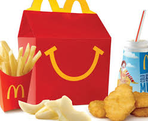

McDonald's is an American fast foodcompany, founded in 1940 as a restaurant operated by Richard and Maurice McDonald, in San Bernardino, California, United States. They rechristened their business as a hamburger stand, and later turned the company into a franchise, with the Golden Arches logo being introduced in 1953 at a location in Phoenix, Arizona. In 1955, Ray Kroc, a businessman, joined the company as a franchise agent and proceeded to purchase the chain from the McDonald brothers. McDonald's had its original headquarters in Oak Brook, Illinois, but moved its global headquarters to Chicago in early 2018.
McDonald's predominantly sells hamburgers, various types of chicken, chicken sandwiches, French fries, soft drinks, breakfast items, and desserts. In most markets, McDonald's offers salads and vegetarian items, wraps and other localized fare. On a seasonal basis, McDonald's offers the McRib sandwich. Some speculate the seasonality of the McRib adds to its appeal.

Products are offered as either "eat-in" (where the customer opts to eat in the restaurant) or "take-out" (where the customer opts to take the food for consumption off the premises). "Eat-in" meals are provided on a plastic tray with a paper insert on the floor of the tray. "Take-out" meals are usually delivered with the contents enclosed in a distinctive McDonald's-branded brown paper bag. In both cases, the individual items are wrapped or boxed as appropriate.